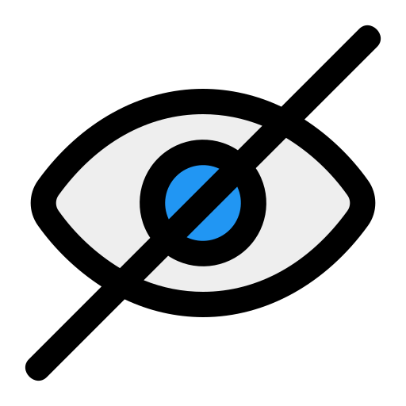
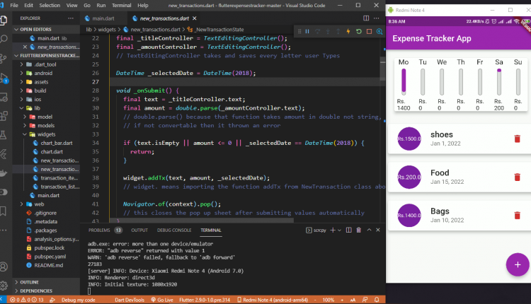
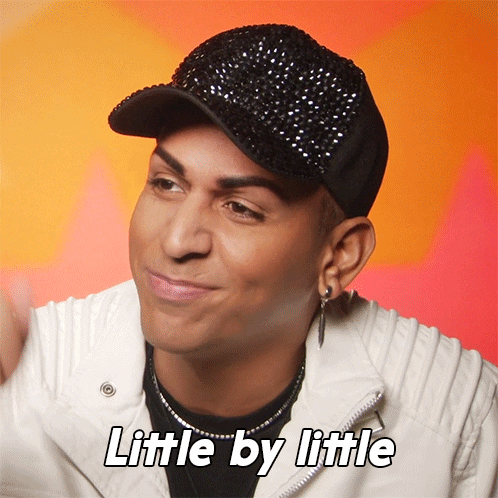

Accessibility in Flutter Workshop
Presented by Angga Arifandi August 2025
Hello There

I'm Angga Arifandi. Software Engineer, ING Netherlands. Google Dev Expert in Flutter
Workshop Agenda
- Part 1: Foundations of Accessibility in Flutter (30-45 min)
- Break (10 minutes)
- Part 2: Interactive Case Study (45 min)
- Break (10 minutes)
- Part 3: Scaling Accessibility in Large Codebases (45 min)
- Q&A: Questions and Closing
Part 1
Foundations of Accessibility (+ in Flutter)
WCAG Principles - POUR
- 📱 Perceivable Information must be presentable to users in ways they can perceive
- ⚡ Operable User interface components must be operable
- 🧠 Understandable Information and UI operation must be understandable
- 🔧 Robust Content must be robust enough for various assistive technologies
WCAG Principles - POUR
- 🔧 Robust Content must be robust enough for various assistive technologies
iOS VoiceOver
Flutter's Accessibility Features
- 🔤 Large font support across platforms
- 📢 Screen reader compatibility (TalkBack, VoiceOver)
- 🎨 Color contrast guidelines
- 🏷️ Semantic role assignment for custom widgets
- 🎯 Focus management and keyboard navigation
- ✋ Accessible gesture alternatives
🔤 Large font support across platforms
Flutter automatically adapts to Device's font setting🔤 Large font support across platforms
Flutter automatically adapts to Device's font setting (How to escape)
Text(
'This text won\'t scale',
style: TextStyle(fontSize: 16),
)
🔤 Large font support across platforms
Flutter automatically adapts to Device's font setting (How to escape)
MediaQuery(
data: MediaQuery.of(context).copyWith(textScaleFactor: 1.0),
child: Text(
'This text won\'t scale',
style: TextStyle(fontSize: 16),
),
)
📢 Screen reader compatibility (TalkBack, VoiceOver)
How Flutter enables screen readers:
- 🤖 Android TalkBack: Automatically reads UI elements aloud
- 🍎 iOS VoiceOver: Provides audio descriptions of interface elements
- 🔄 Automatic semantic tree generation from Flutter widgets
- 📱 Cross-platform consistency in accessibility behavior
🎨 Color contrast guidelines
WCAG Color Contrast Guideline
- Level AA (Minimum): Normal Text, minimum contrast ratio of 4.5:1. Large Text, minimum contrast ratio of 3:1.
- Level AAA Normal Text, minimum contrast ratio of 7:1. Large Text, minimum contrast ratio of 4.5:1.
🎨 Color contrast guidelines
double calculateContrastRatio(Color color1, Color2 color2) {
double luminance1 = color1.computeLuminance();
double luminance2 = color2.computeLuminance();
double lightest = math.max(luminance1, luminance2);
double darkest = math.min(luminance1, luminance2);
return (lightest + 0.05) / (darkest + 0.05);
}
🎨 Color contrast guidelines
double calculateContrastRatio(Color color1, Color2 color2) {
double luminance1 = color1.computeLuminance();
double luminance2 = color2.computeLuminance();
double lightest = math.max(luminance1, luminance2);
double darkest = math.min(luminance1, luminance2);
return (lightest + 0.05) / (darkest + 0.05);
}
// Usage
Color backgroundColor = Colors.blue[700]!;
Color textColor = Colors.white;
double contrast = calculateContrastRatio(backgroundColor, textColor);
print('Contrast ratio: ${contrast.toStringAsFixed(2)}:1');
// Should print something like "Contrast ratio: 7.23:1"
🏷️ Semantic role assignment for custom widgets
Text(
'Test Page',
style: TextStyle(
color: Colors.white,
),
)
🏷️ Semantic role assignment for custom widgets
class Text extends StatelessWidget {
final String semanticsLabel;
Widget build(BuildContext context) {
...
if (semanticsLabel != null) {
result = Semantics(
textDirection: textDirection,
label: semanticsLabel,
child: ExcludeSemantics(
child: result,
),
);
}
return result;
}
}
🏷️ Semantic role assignment for custom widgets
class MyCustomButton extends StatelessWidget {
Widget build(BuildContext context) {
return GestureDetector(
child: Container(
...,
),
);
}
}
Custom widgets might not support Semantics by default
🏷️ Semantic role assignment for custom widgets
class MyCustomButton extends StatelessWidget {
Widget build(BuildContext context) {
return Semantics(
button: true,
enabled: isEnabled,
child: GestureDetector(
child: Container(
...,
),
)
);
}
}
🎯 Focus management and keyboard navigation
Widget build(BuildContext context) {
return Column(
children: [
Container1(),
Container2(),
Container3(),
Container4(),
],
)
}
🎯 Focus management and keyboard navigation
Widget build(BuildContext context) {
return Column(
children: [
Semantics(
label: 'Some Label',
sortKey: OrdinalSortKey(1),
Container1(),
),
Semantics(
label: 'Some Label',
sortKey: OrdinalSortKey(1),
child: Container2(),
),
Semantics(
label: 'Some Label',
sortKey: OrdinalSortKey(4),
child: Container3(),
),
Semantics(
label: 'Fixed bottom section',
sortKey: OrdinalSortKey(2),
child: Container4(),
),
],
)
}
🎯 Focus management and keyboard navigation
Widget build(BuildContext context) {
return Column(
children: [
Container1(),
Container2(),
Container3(),
// will be skipped
// from TalkBack
Semantics(
excludeSemantics: true,
child: Container4(),
),
],
)
}
✋ Accessible gesture alternatives
🎯 Core Principle:
"Gesture activated functionality should also be available without the use of gestures."
Implementation:
- ✋ Provide alternative interaction methods
- 🚫 Allow users to cancel accidental interactions
- 🔄 Support motion alternatives for motion-activated actions
- 📝 Provide clear input instructions
✋ Accessible gesture alternatives
Widget build(BuildContext context) {
return Column(
children: [
ImageViewer(),
],
)
}
✋ Accessible gesture alternatives
Widget build(BuildContext context) {
return Column(
children: [
Row(
children: [
ZoomInButton(),
ZoomOutButton(),
ResetButton(),
],
),
ImageViewer(),
],
)
}
✋ Accessible gesture alternatives
Widget build(BuildContext context) {
return Column(
children: [
// ✅ Alternative: Keyboard controls
Semantics(
label: 'Current zoom level: ${(_scale * 100).round()}%',
child: Focus(
onKeyEvent: (node, event) {
if (event is KeyDownEvent) {
switch (event.logicalKey) {
case LogicalKeyboardKey.equal: // + key
if (event.isControlPressed) {
_zoomIn();
return KeyEventResult.handled;
}
break;
...,
child: ImageViewer(),
],
)
}
Automatic Accessibility
- ✅ Standard Flutter widgets generate accessibility trees automatically
-
⚙️ Semantic roles can be explicitly defined using
Semanticswidget - 🧪 Testing tools available via Accessibility Guideline API
✅ Standard Flutter widgets generate accessibility trees automatically
Widget build(BuildContext context) {
return MaterialButton();
}
✅ Standard Flutter widgets generate accessibility trees automatically
// Implementation of
// MaterialButton
Widget build(BuildContext context) {
return Semantics(
container: true,
button: true,
enabled: widget.enabled,
child: _InputPadding(
minSize: minSize,
child: result,
),
);
}
✅ Standard Flutter widgets generate accessibility trees automatically
Widget build(BuildContext context) {
return TextField();
}
✅ Standard Flutter widgets generate accessibility trees automatically
/// TextField implementation
Widget build(BuildContext context) {
return Semantics(
enabled: _isEnabled,
maxValueLength: semanticsMaxValueLength,
currentValueLength: _currentLength,
...
);
}
✅ Standard Flutter widgets generate accessibility trees automatically
/// Your Own Custom Button implementation
Widget build(BuildContext context) {
return GestureDetector(
onTap: onTap,
child: child,
);
}
⚙️ Semantic roles can be explicitly defined using Semantics widget
Provides additional information about widgets to assistive technologies
Semantics(
label: 'Submit button',
hint: 'Tap this button to submit the form',
child: ElevatedButton(
onPressed: () {
// Submit logic
},
child: Text('Submit'),
),
)
Key Semantic Properties
- label: Describes what the widget is
- hint: Describes what happens when interacting
- value: Current value (for input fields, sliders)
- excludeSemantics: Hide decorative elements
- button: Mark as interactive button
- header: Mark as heading
🧪 Testing tools available via Accessibility Guideline API
Flutter provides multiple testing approaches:
- 🔍 Accessibility Guideline API - Automated accessibility checks
- 🐛 Semantic Debugging - Visual semantic tree inspection
- ⚡ Unit Testing - Test semantic properties programmatically
- 🤖 Integration Testing - Test with real assistive technologies
- 🔧 Automated Tools - CI/CD accessibility validation
🔍 Accessibility Guideline API
Automated accessibility checks built into Flutter testing framework
import 'package:flutter/material.dart';
import 'package:flutter_test/flutter_test.dart';
void main() {
testWidgets('Counter app accessibility test', (WidgetTester tester) async {
await tester.pumpWidget(MyApp());
// Test accessibility guidelines
await expectLater(tester, meetsGuideline(androidTapTargetGuideline));
await expectLater(tester, meetsGuideline(iOSTapTargetGuideline));
await expectLater(tester, meetsGuideline(labeledTapTargetGuideline));
await expectLater(tester, meetsGuideline(textContrastGuideline));
});
}
🔍 Available Guidelines
-
androidTapTargetGuideline
Ensures tap targets are at least 48x48 dp on Android -
iOSTapTargetGuideline
Ensures tap targets are at least 44x44 points on iOS -
labeledTapTargetGuideline
Ensures all tap targets have accessible labels -
textContrastGuideline
Validates text contrast ratios meet WCAG standards
🐛 Semantic Debugging
Visual inspection of the semantic tree during development
import 'package:flutter/rendering.dart';
void main() {
// Enable semantic debugging in main.dart
debugPaintSizeEnabled = false;
runApp(
MaterialApp(
showSemanticsDebugger: true, // Enable semantic tree overlay
home: MyHomePage(),
),
);
}
Shows semantic boundaries, labels, and actions as colored overlays
🐛 Programmatic Semantic Debugging
import 'package:flutter/rendering.dart';
void debugSemanticTree() {
// Print semantic tree to console
debugDumpSemanticsTree();
// Print render tree (includes semantic info)
debugDumpRenderTree();
// Print app's semantic tree in testing
debugDumpApp();
}
// In widget tests
testWidgets('Debug semantic tree', (WidgetTester tester) async {
await tester.pumpWidget(MyApp());
// Print semantic tree for inspection
debugDumpSemanticsTree();
});
⚡ Unit Testing Semantic Properties
Test specific semantic properties programmatically
testWidgets('Button has correct semantic properties', (WidgetTester tester) async {
await tester.pumpWidget(
MaterialApp(
home: Scaffold(
body: ElevatedButton(
onPressed: () {},
child: Text('Submit'),
),
),
),
);
// Find semantic node
final buttonSemantics = tester.getSemantics(find.text('Submit'));
// Verify semantic properties
expect(buttonSemantics.hasAction(SemanticsAction.tap), isTrue);
expect(buttonSemantics.label, equals('Submit'));
expect(buttonSemantics.isButton, isTrue);
expect(buttonSemantics.isEnabled, isTrue);
});
⚡ Testing Custom Semantic Properties
testWidgets('Custom widget has proper semantics', (WidgetTester tester) async {
await tester.pumpWidget(
MaterialApp(
home: Semantics(
label: 'User profile picture',
hint: 'Tap to change profile picture',
button: true,
child: GestureDetector(
onTap: () {},
child: CircleAvatar(child: Icon(Icons.person)),
),
),
),
);
final semantics = tester.getSemantics(find.byType(CircleAvatar));
expect(semantics.label, equals('User profile picture'));
expect(semantics.hint, equals('Tap to change profile picture'));
expect(semantics.hasAction(SemanticsAction.tap), isTrue);
expect(semantics.isButton, isTrue);
});
🤖 Integration Testing with Screen Readers
Test real accessibility behavior with assistive technologies
// integration_test/accessibility_test.dart
import 'package:integration_test/integration_test.dart';
import 'package:flutter_test/flutter_test.dart';
import 'package:myapp/main.dart' as app;
void main() {
IntegrationTestWidgetsFlutterBinding.ensureInitialized();
group('Accessibility Integration Tests', () {
testWidgets('Navigation with TalkBack simulation', (tester) async {
app.main();
await tester.pumpAndSettle();
// Simulate screen reader navigation
await tester.binding.defaultBinaryMessenger.send(
'flutter/accessibility',
// TalkBack navigation commands
);
// Verify screen reader announcements
// (requires platform-specific implementation)
});
});
}
🔧 Creating Custom Accessibility Tests
// test/accessibility_helper.dart
import 'package:flutter_test/flutter_test.dart';
class AccessibilityTestHelper {
static Future runAccessibilityTests(WidgetTester tester) async {
// Test all standard guidelines
await expectLater(tester, meetsGuideline(androidTapTargetGuideline));
await expectLater(tester, meetsGuideline(iOSTapTargetGuideline));
await expectLater(tester, meetsGuideline(labeledTapTargetGuideline));
await expectLater(tester, meetsGuideline(textContrastGuideline));
// Custom validations
await _validateCustomSemantics(tester);
}
static Future _validateCustomSemantics(WidgetTester tester) async {
// Find all interactive elements
final buttons = find.byWidgetPredicate((widget) =>
widget is ElevatedButton || widget is TextButton || widget is IconButton
);
// Ensure each has proper semantics
for (int i = 0; i < tester.widgetList(buttons).length; i++) {
final buttonFinder = buttons.at(i);
final semantics = tester.getSemantics(buttonFinder);
expect(semantics.label?.isNotEmpty, isTrue,
reason: 'Button at index $i missing label');
}
}
}
Accessibility Testing in Flutter Checklist
- ✅ Interactive elements have meaningful actions
- ✅ Test with screen readers (TalkBack, VoiceOver)
- ✅ Verify sufficient color contrast
- ✅ Tappable targets are at least 48x48 pixels
- ✅ Support context preservation during interactions
- ✅ Enable undo actions for important operations
- ✅ Test with large fonts enabled
(Optional) Show example using a simple Flutter app
Exaplanation and Example
☕ Break Time
10 Minutes
Get some coffee, stretch, and we'll continue with Part 2!
Part 2
Interactive Case Study
App for case study
what are we going to do?
- We will take a look how are the current app looks (might also be a blind test!)
- We will discuss together what are the flaws from the accessibility perspective
- We will try to fix the flaws we just discovered
- We will see the existing solution that I have prepared
Lets look and discuss the current situation of the app
Points To be discussed
- Use Flutter widgets
- Grouping
- Missing Semantic Labels and Descriptions
- Inaccessible Interactive Elements
- Poor Color Contrast
- Missing Focus Management
- Insufficient Touch Target Sizes
Questions?
☕ Break Time
10 Minutes
Another quick break before our final section!
Part 3
Scaling Accessibility in Large Codebases
Topics
- Challenges in Large Flutter Projects
- Strategy & Prioritization
- Creating Scalable Patterns
- Testing & Automation
- Use of AI
Challenges in Large Flutter Projects
Legacy code with poor accessibility practices
Challenges in Large Flutter Projects
Legacy code with poor accessibility practices
Challenges in Large Flutter Projects
Inconsistent use of widgets and components
class SomePage extends StatelessWidgets {
Widget build(BuildContext context) {
return Scaffold(
body: Column(
children: [
GestureDetector(),
MyButtonComponents(),
MaterialButton(),
],
),
);
}
}
Challenges in Large Flutter Projects
Inconsistent use of widgets and components
class SomePage extends StatelessWidgets {
Widget build(BuildContext context) {
return Scaffold(
body: Column(
children: [
MyButtonComponents(),
MyButtonComponents(),
MyButtonComponents(),
// always only use your
// local component on the page impl
],
),
);
}
}
Challenges in Large Flutter Projects
No Semantic wrapper on custom widget
class SomeWidget extends StatelessWidgets {
Widget build(BuildContext context) {
return GestureDetector(
onTap: onTap,
child: SomeWidget(),
);
}
}
Challenges in Large Flutter Projects
No Semantic wrapper on custom widget
class SomeWidget extends StatelessWidgets {
Widget build(BuildContext context) {
// always use Semantic on custom
// non-default Flutter widgets
return Semantic(
button: true,
child: GestureDetector(
onTap: onTap,
child: SomeWidget(),
),
);
}
}
Challenges in Large Flutter Projects
Lack of Documentation or Accessibility Standard
class MyButton1 extends StatelessWidgets {
Widget build(BuildContext context) {
return ...;
}
}
class MyButton2 extends StatelessWidgets {
Widget build(BuildContext context) {
return ...;
}
}
class MyButton3 extends StatelessWidgets {
Widget build(BuildContext context) {
return ...;
}
}
Challenges in Large Flutter Projects
Lack of Documentation or Accessibility Standard
// Have a Base Component in project
class MyOnlyButton extends StatelessWidgets {
Widget build(BuildContext context) {
return ...;
}
}
Strategy & Prioritization
Strategy & Prioritization
Start by auditing your app
testWidgets('Counter app accessibility test', (WidgetTester tester) async {
await tester.pumpWidget(MyApp());
// Test accessibility guidelines
await expectLater(tester, meetsGuideline(androidTapTargetGuideline));
await expectLater(tester, meetsGuideline(iOSTapTargetGuideline));
await expectLater(tester, meetsGuideline(labeledTapTargetGuideline));
await expectLater(tester, meetsGuideline(textContrastGuideline));
});
Strategy & Prioritization
Start by auditing your app
Strategy & Prioritization
Start by auditing your app
testWidgets('All buttons have semantic labels', (WidgetTester tester) async {
await tester.pumpWidget(MyApp());
// Find all buttons
final buttons = find.byType(ElevatedButton);
expect(buttons, findsWidgets);
// Check each button has accessibility info
for (int i = 0; i < tester.widgetList(buttons).length; i++) {
final button = tester.widget(buttons.at(i));
// Add semantic checks here
}
});
Strategy & Prioritization
Start by auditing your app
Strategy & Prioritization
Prioritizing Critical Flows (Login, Home Page, etc)
Strategy & Prioritization
Prioritizing Critical Flows (Login, Home Page, etc)
Strategy & Prioritization
Create an accessibility Backlog
Creating Scalable Patterns
Creating Scalable Patterns
Build Reusable accessible widgets
class BaseButton extends StatelessWidget {}
class BaseText extends StatelessWidget {}
class BaseTextField extends StatelessWidget {}
class BaseCard extends StatelessWidget {}
Creating Scalable Patterns
Inherit Flutter base widget as much as possible
class BaseButton extends StatelessWidget {
Widget build(BuildContext context) {
return GestureDetector();
}
}
Creating Scalable Patterns
Inherit Flutter base widget as much as possible
class BaseButton extends StatelessWidget {
Widget build(BuildContext context) {
// try to use this as much
// as possible
return ElevatedButton();
}
}
Creating Scalable Patterns
Use composition over inheritance with accessibility in mind
class AccessibleButton extends BaseAccessibleWidget {
const AccessibleButton({
String? semanticLabel,
}) : super(semanticLabel: semanticLabel, isButton: true);
@override
Widget build(BuildContext context) {
// Complex accessibility logic mixed with UI logic
return Semantics(
label: semanticLabel,
button: isButton,
Creating Scalable Patterns
Use composition over inheritance with accessibility in mind
// Small, focused accessibility wrapper
class AccessibleWrapper extends StatelessWidget {
final Widget child;
final String? label;
final String? hint;
final bool isButton;
final bool isHeader;
final bool enabled;
final VoidCallback? onTap;
@override
Widget build(BuildContext context) {
return Semantics(
label: label,
Creating Scalable Patterns
Use composition over inheritance with accessibility in mind
// Compose accessible widgets using the wrapper
class MyAccessibleButton extends StatelessWidget {
final String label;
final VoidCallback? onPressed;
final Widget child;
@override
Widget build(BuildContext context) {
return AccessibleWrapper(
label: label,
hint: 'Double tap to activate',
isButton: true,
enabled: onPressed != null,
onTap: onPressed,
child: ElevatedButton(
...
Creating Scalable Patterns
Abstract semantics logic where possible
// Scattered semantics logic throughout the app
class ProfileButton extends StatelessWidget {
@override
Widget build(BuildContext context) {
return Semantics(
label: 'Profile button',
hint: 'Double tap to view profile',
}
}
class SettingsButton extends StatelessWidget {
@override
Widget build(BuildContext context) {
return Semantics(
label: 'Settings button',
hint: 'Double tap to open settings',
Creating Scalable Patterns
Abstract semantics logic where possible
// Abstract common semantics patterns
class SemanticPatterns {
// Button semantics
static Widget button({
required Widget child,
required String label,
String? hint,
bool enabled = true,
VoidCallback? onTap,
}) {
return Semantics(
label: label,
hint: hint ?? 'Double tap to activate',
}
// Header semantics
static Widget header({
required Widget child,
required String label,
int level = 1,
}) {
return Semantics(
label: label,
header: true,
);
}
Creating Scalable Patterns
Abstract semantics logic where possible
// Now use the abstracted patterns
class ProfileButton extends StatelessWidget {
@override
Widget build(BuildContext context) {
return SemanticPatterns.button(
label: 'Profile',
hint: 'View your profile information',
onTap: navigateToProfile,
child: IconButton(
icon: Icon(Icons.person),
onPressed: navigateToProfile,
),
);
}
}
Creating Scalable Patterns
Create a good design system for pages
class BasePageMain extends StatelessWidget {}
class BaseDetailPage extends StatelessWidget {}
Testing & Automation
Testing & Automation
Use the Flutter unit tests
testWidgets('Button has correct semantic properties', (WidgetTester tester) async {
await tester.pumpWidget(
MaterialApp(
home: AccessibleButton(
label: 'Submit Form',
onPressed: () {},
),
),
);
// Test semantic label
expect(find.bySemanticsLabel('Submit Form'), findsOneWidget);
// Test button semantics
final semantics = tester.getSemantics(find.byType(AccessibleButton));
expect(semantics.hasAction(SemanticsAction.tap), isTrue);
expect(semantics.hasFlag(SemanticsFlag.isButton), isTrue);
expect(semantics.hasFlag(SemanticsFlag.isEnabled), isTrue);
Testing & Automation
Check the contrast programmatically
// Test contrast ratio programmatically
final backgroundLuminance = Colors.blue[700]!.computeLuminance();
final textLuminance = Colors.white.computeLuminance();
final contrast = (textLuminance + 0.05) / (backgroundLuminance + 0.05);
// WCAG AA requires 4.5:1 for normal text
expect(contrast, greaterThan(4.5));
Testing & Automation
Check the semantics programmatically
await tester.pumpWidget(
MaterialApp(
home: Scaffold(
body: ListView.builder(
itemCount: items.length,
itemBuilder: (context, index) {
return Semantics(
label: '${items[index]}, item ${index + 1} of ${items.length}',
button: true,
child: ListTile(
title: Text(items[index]),
onTap: () {},
),
);
},
),
),
),
);
// Test each item has correct semantics
for (int i = 0; i < items.length; i++) {
expect(
find.bySemanticsLabel('${items[i]}, item ${i + 1} of ${items.length}'),
findsOneWidget,
);
}
Testing & Automation
Use lint
Widget build(BuildContext context) {
return Column(
children: [
SomeButtonComponent(
// Label here is optional
semanticLabel: 'Label1',
),
SomeButtonComponent(),
SomeButtonComponent(),
],
);
}
// later you can count how
// many SomeButtonComponent without
// semanticLabel. Using custom linter
Use of AI
Use of AI
Use of AI
// Prompt
Hey, can you check @some_page.dart if all the
accessibility requirements are met?
// You can be more specific here of course
Repository
Last Questions?
Thank you for attending the Accessibility in Flutter workshop!
*In case of future questions, feel free to contact me at anggadwiarifandi96@gmail.comRemember: Accessibility is not a feature, it's a responsibility. ☺️
Thank You!
Building inclusive apps together 🚀
P.S. See you when I see you, and good luck! 🔥🔥🔥